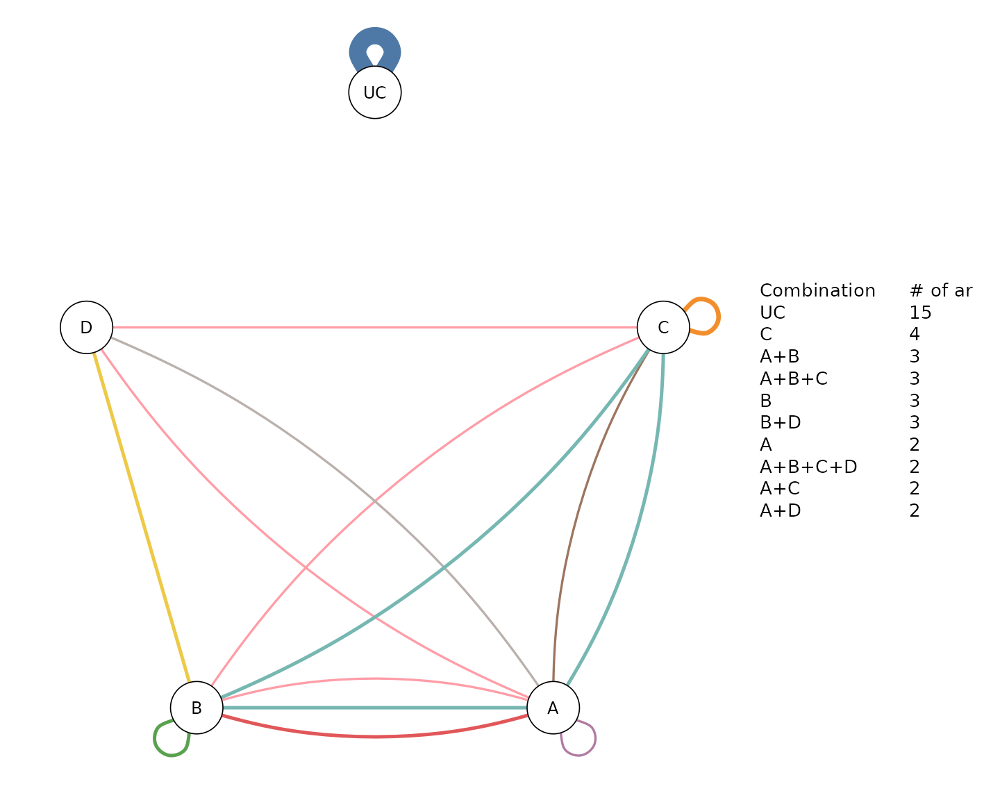
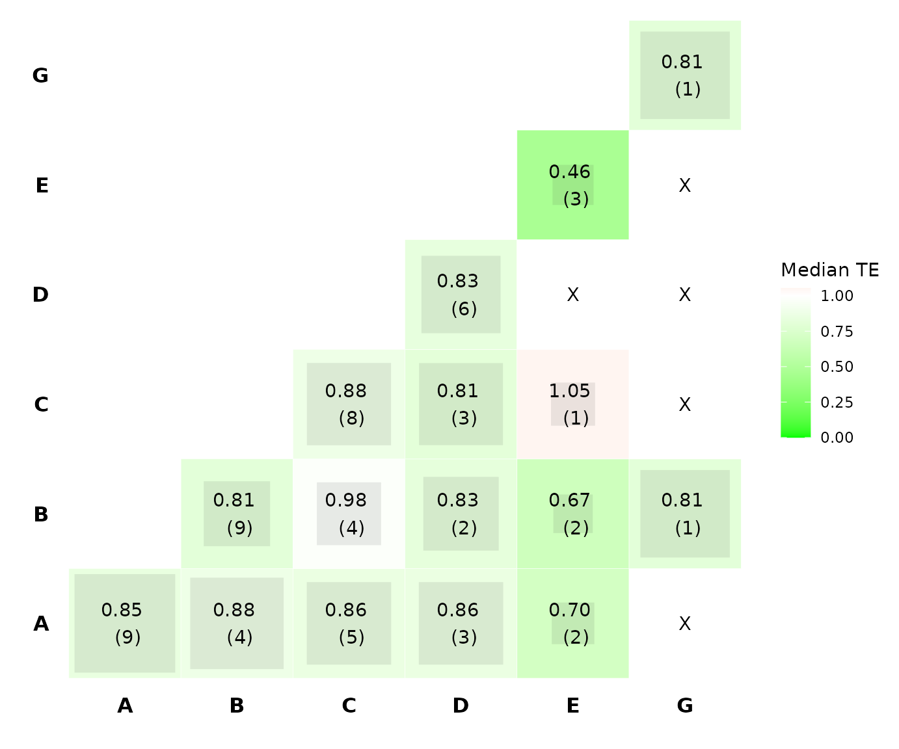
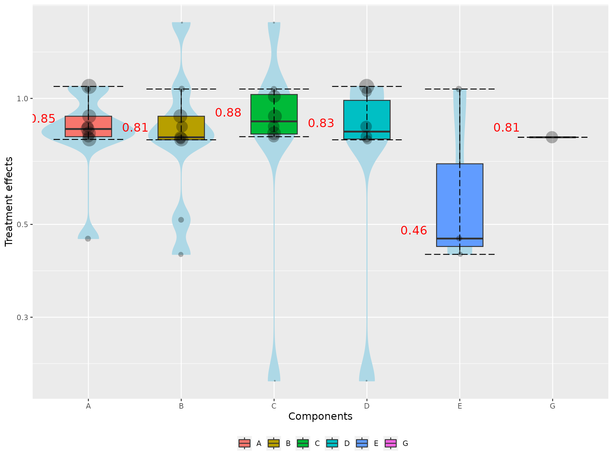
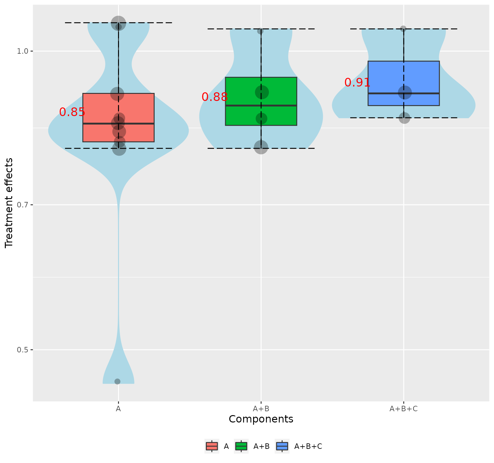
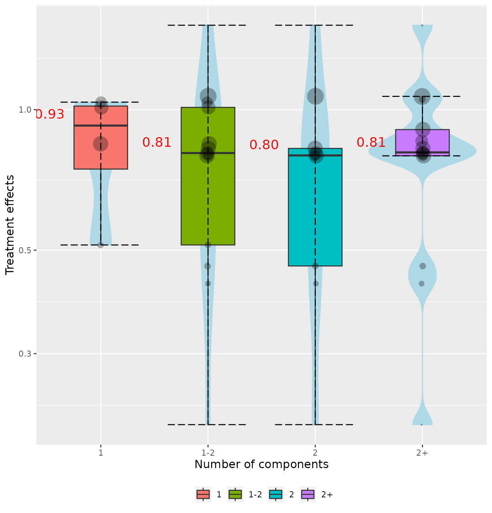
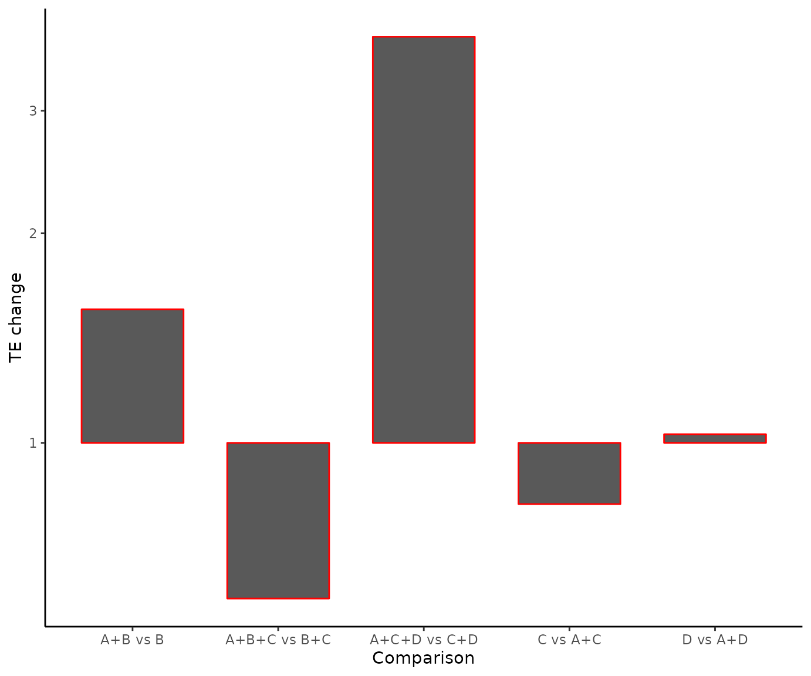

An introduction to network meta-analysis using the viscomp package
Georgios Seitidis
Source:vignettes/viscomp.Rmd
viscomp.RmdWhen multicomponent (complex) interventions are present in a network meta-analysis model we usually interested on:
- identifying the most efficacious components
- identifying which component combination works better
- understanding the behavior of the components
The viscomp package provides several visualization tools to address these issues. This document makes an introduction to viscomp’s set of tools, and shows you how to apply them on network meta-analysis when multicomponent (complex) interventions are included.
Single outcome
Artificial network meta-analysis model
Load the MACE data of the viscomp package
Network meta-analysis (NMA) model is applied using the R-package netmeta. MACE is a dichotomous harmful outcome and the NMA model is constructed using the odds ratios (OR) as effect size.
library(netmeta)
data_NMA <- pairwise(studlab = Study,
treat = list(treat1, treat2, treat3, treat4),
n = list(n1, n2, n3, n4),
event = list(event1, event2, event3, event4),
data = MACE,
sm = "OR" )
net <- netmeta(TE = TE,
seTE = seTE,
studlab = studlab,
treat1 = treat1,
treat2 = treat2,
data = data_NMA,
ref = "UC")Descriptive analysis of components with compdesc
compdesc performs a descriptive analysis for the components observed in the network. It provides 3 items as an output. Item crosstable contains a cross-table with the frequency of the components. Diagonal elements refer to the components, while off-diagonal elements to the components combinations. Each cell represents the number of arms where the corresponding component (combination) was observed. Item heatmat visualizes the item . The intensity of the color is proportional to the frequency of the component combination. Item frequency provides usefull descriptive charactericts about the component’s frequency. In addition, it reports:
- the number of arms where the component was observed (column Frequency)
- the number of studies in which the corresponding component was included in all arms (column A)
- the percentage of studies in which the corresponding component was included in all arms (column A_percent)
- the number of studies in which the corresponding component was included in at least one arm (column B)
- the percentage of studies in which the corresponding component was included in at least one arm (column B_percent)
- the number of studies in which the corresponding component was not included in any arm (column C)
- the percentage of studies in which the corresponding component was not included in any arm (column C_percent)
- the ratio of columns A and B (column A.B).
We can perform a descriptive analysis of the components with:
compdesc(net)
#> $crosstable
#> A B C D G E UC
#> A 17 9 9 5 0 2 0
#> B 9 18 7 5 1 2 0
#> C 9 7 15 4 0 1 0
#> D 5 5 4 11 0 0 0
#> G 0 1 0 0 1 0 0
#> E 2 2 1 0 0 3 0
#> UC 0 0 0 0 0 0 15
#>
#> $frequency
#> Component Frequency A A_percent B B_percent C C_percent A.B
#> A A 17 2 0.09090909 11 0.50000000 11 0.5000000 0.1818182
#> B B 18 3 0.13636364 13 0.59090909 9 0.4090909 0.2307692
#> C C 15 2 0.09090909 11 0.50000000 11 0.5000000 0.1818182
#> D D 11 1 0.04545455 9 0.40909091 13 0.5909091 0.1111111
#> G G 1 0 0.00000000 1 0.04545455 21 0.9545455 0.0000000
#> E E 3 0 0.00000000 3 0.13636364 19 0.8636364 0.0000000
#> UC UC 15 0 0.00000000 15 0.68181818 7 0.3181818 0.0000000
#>
#> $heatmatExplore components geometry with compGraph()
compGraph() is meant to visualize the frequency of components’ combinations found in the network. The function resembles a network plot where nodes represent the individual components found in the network and edges represent the combination of components found in at least one treatment arm of the trials included in the network meta-analysis model. Each edge’s color represents one of the unique interventions (components’ combination) found in the network of interventions. Edges’ thickness indicates the frequency by which each intervention (combination of components) was observed in the network (number of arms in which the combination was assigned). The number of the most frequent combinations can be modified from the argument mostF.
We can visualize the 10 most frequent component combinations with:
compGraph(net, mostF = 10, title = "")
In NMA we usually have interventions that are used as a potentially inactive reference intervention (e.g. placebo, usual care), and are not combined with other interventions. We can exclude these interventions through the argument excl. For example, we can exclude the usual care (UC) from the component network plot with:
compGraph(net, mostF = 10, title = "", excl = "UC")Explore the efficacy of the two-by-two components combinations with heatcomp()
heatcomp() creates a heat plot comparing the two-by-two component combinations to the reference intervention. Diagonal elements refer to components, while off-diagonal to components’ combinations. Each element summarizes the efficacy of the interventions (obtained from the NMA model) that includes the corresponding component combination. The frequency of the components combinations found in the NMA model is printed by default (freq = TRUE). Combinations that were not observed in the NMA model are denoted by the letter “X”. The function by default uses the z-scores (z_value = TRUE) and the median as a summary measure (median = TRUE).
Z-scores quantify the strength of statistical evidence. The magnitude of the evidence is reflected by the color’s intensity. Estimates close to zero are denoted by white color, and indicates lack of evidence that the corresponding component combination performs better than the reference intervention. In beneficial outcomes, deep green and red colors indicate strong evidence that the corresponding component combination performs better and worse respectively. The opposite holds for harmful outcomes. The nature of the outcome (beneficial, harmful) is controlled by the argument outcome.
We can visualize the efficacy of the components, with:
heatcomp(net, outcome = "harmful")
From the plot we see that the most intensive colors are observed for the component E, G, and the combination between components B and G. Thus, these combination seems to be the most efficacious according to the heatcomp(). We also see that the frequency of component G and the combination of B and G equals one, indicating that their corresponding estimates have been obtained by a single intervention.
Explore the efficacy of the components with specc()
Components
specc() works similarly to heatcomp() except that instead of visualizing the two-by-two component combinations, it can visualize combinations with more than two components. The function by default produces violin plots based on the components z-values.
We can visualize the distribution of each component in the network with:
specc(net)
#> Warning: Violin plot requires at least 2 data point
Note that in the plot the median estimates of the components are equal with the diagonal elements of the heatcomp() function. Also, we receive a warning message because component G was included in a single intervention.
Components combinations
We can visualize the distribution of component combinations (e.g. A, A+B, A+B+C) with:

Number of components
Often, we interested on exploring the behavior of intervention’s effect as the number of components increased. We can do that with:
specc(net, components_number = TRUE)
We can also group the violins in cluster based on the number of components. For example, we can create violins for interventions that includes 1 component, 2 components, 1-2 components and more than 2 components, with

Explore the efficacy of the components with denscomp()
The efficacy of a component (or component combination) can be explored by comparing the corresponding densities. denscomp() compares the following densities: one density is constructed by the NMA results referring to the interventions including the component (combination) of interest, while the second density refers to the interventions, not including the underlying component (combination).
For example, if we interested on exploring the efficacy of the component combination A+B, we can visualize the densities of the NMA intervention estimates from the interventions that include and not include component A respectively, with
denscomp(net, combination = "A+B", z_value = FALSE)
denscomp() can also compare more than two densities. If we interested for example to compare the densities of the interventions that include component A, components A+B, and components A+B+C, we can do it with
Leaving one component out scatter plot with loccos()
Exploring whether the inclusion or the exclusion of a component (combination) has a positive or negative impact on the efficacy of an intervention could be undertaken by looking at the interventions that differ by this specific component (combination). loccos() creates a scatter plot where the x-axis represents the z-score of the intervention that includes the component and the y-axis represents the z-score of the intervention that does not include the component. A point on the line y = x indicates that the inclusion/exclusion of the underlying component does not affect the efficacy of the interventions. Dots above the y = x line for a beneficial outcome, indicate that the inclusion of a component hampers the treatment effect while dots below this line signify a component that increases efficacy. The opposite holds for a harmful outcome.
We can explore the impact of component A, with:
loccos(net, combination = "A", histogram = FALSE)Waterfall plot with watercomp()
watercomp() works similarly to loccos() except that instead of visualizing the impact of a component (combination) in a scatter plot, the impact is now visualizing in a waterfall plot. The horizontal y = 0 line represents zero impact on the intervention efficacy if an extra component is added. Bars indicate whether the inclusion of the extra component has an impact on the intervention. The interpretation of the direction of the underlying bars (positive or negative) depends on the nature of the outcome used (beneficial or harmful).
We can explore the impact of component A, with:
watercomp(net, combination = "A")
Multiple outcomes
Artificial network meta-analysis model
t1 <- c("A", "B", "C", "A+B", "A+C", "B+C", "A")
t2 <- c("C", "A", "A+C", "B+C", "A", "B", "B+C")
TE1 <- c(2.12, 3.24, 5.65, -0.60, 0.13, 0.66, 3.28)
TE2 <- c(4.69, 2.67, 2.73, -3.41, 1.79, 2.93, 2.51)
seTE1 <- rep(0.1, 7)
seTE2 <- rep(0.2, 7)
study <- paste0("study_", 1:7)
data1 <- data.frame("TE" = TE1,
"seTE" = seTE1,
"treat1" = t1,
"treat2" = t2,
"studlab" = study,
stringsAsFactors = FALSE)
data2 <- data.frame("TE" = TE2,
"seTE" = seTE2,
"treat1" = t1,
"treat2" = t2,
"studlab" = study,
stringsAsFactors = FALSE)
net1 <- netmeta(TE = TE,
seTE = seTE,
studlab = studlab,
treat1 = treat1,
treat2 = treat2,
data = data1,
ref = "A")
net2 <- netmeta::netmeta(TE = TE,
seTE = seTE,
studlab = studlab,
treat1 = treat1,
treat2 = treat2,
data = data2,
ref = "A")Visualize the components’ ranking for multiple outcomes with rankheatplot()
rankheatplot() creates a rank heat plot where the ranking of interventions can be presented across multiple outcomes (Veroniki et al., 2016). Circles corresponds to outcomes, while rads to components. Sectors are coloured according to the ranking of the relevant components within the underlying outcomes. Ranking is calculated as the median (or the mean) of the intervention P-scores including the component of interest in the particular outcome. The coloured scale ranges between red (p-score = 0%) and green (p-score = 100%). Uncolored sectors, if any, suggest that the underlying component was not included in any of the interventions in the NMA for the particular outcome.
We can visualize the p-scores for the two outcomes (assuming that the first outcome is beneficial while the second is harmful), with:
rankheatplot(list(net1, net2), small.values = c("good", "bad"))References
- Veroniki, A. A., Straus, S. E., Fyraridis, A., & Tricco, A. C. (2016). The rank-heat plot is a novel way to present the results from a network meta-analysis including multiple outcomes. Journal of Clinical Epidemiology, 76, 193–199. https://doi.org/10.1016/j.jclinepi.2016.02.016